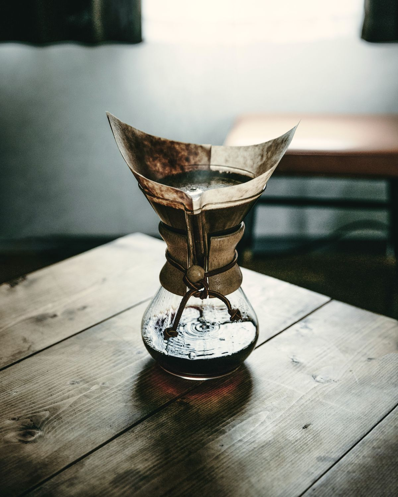
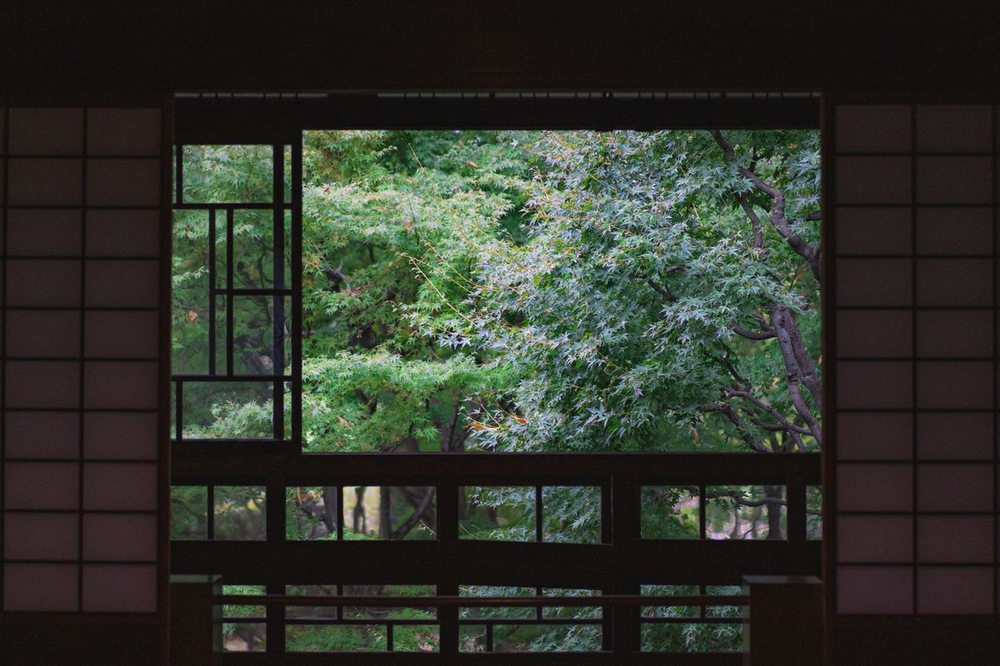

ごあいさつ
東京の焙煎所で十年働いたあと、祖母の家があった小布施に戻ってきました。
子どものころ、秋になると祖母が栗ようかんを炊いてくれた、あの台所の匂いをいまでも覚えています。
この町の栗と、毎朝焼く珈琲で、ふらっと立ち寄れる場所をつくりたい。そう思って、近所の方に教わりながら蔵を直しました。
観光の途中の方も、毎朝の散歩の途中の方も、同じように迎えられるお店でありたいと思っています。
店主 栗田 しのぶ

珈琲のこと
豆は、産地と農園がわかるものだけを仕入れています。一度に焼くのは一キロ。焼いてから三日ほど休ませた、いちばん香りが立つころの豆を使います。
苦いのが苦手な方には浅めの豆を、焼き菓子と合わせる方には深めの豆を。迷ったら、注文のときにお気軽にお声がけください。

History蔵のあゆみ
- 1934味噌蔵として建てられる。厚さ三十センチの土壁と、太い松の梁。
- 1987味噌づくりをやめ、物置として使われるように。
- 2022店主が蔵を借りる。地元の大工さん・左官さんと、二年かけて直す。
- 2024「栗の木舎」として開店。奥に小さな焙煎室をつくる。